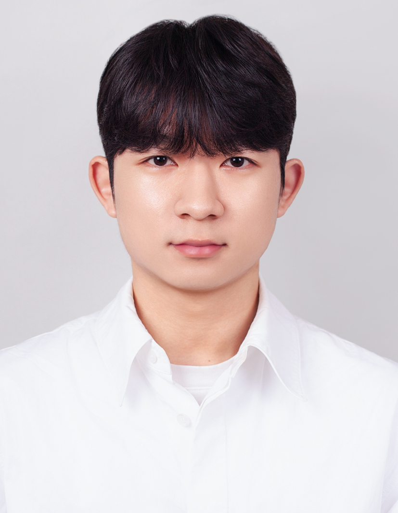

Profile

I am a graduate researcher working on electrochemical energy systems, including fuel cells and water electrolysis. My research interests include polymer electrolyte membranes, catalysts, electrodes, and interfacial engineering for high-performance and durable energy devices.
Education
- M.S. in Mechanical Engineering, Kookmin University
- B.S. in Nanoelectronic Physics and Mechanical Systems Engineering, Kookmin University
Research Interests
- Fuel cells and water electrolysis
- Polymer electrolyte membranes
- Electrode and membrane-electrode interfacial engineering
- iCVD-based surface modification
Research
My research focuses on materials and interfacial design for fuel cells and water electrolysis systems. I investigate degradation mechanisms and develop strategies to enhance electrochemical performance, durability, and transport properties.
- Polymer electrolyte membranes and reinforced composite membranes
- Catalyst layers, electrodes, and membrane-electrode interfaces
- iCVD-based surface modification of porous supports and functional interfaces
- Electrochemical analysis of PEMFCs, AEMWEs, and related energy devices
Publications and Conferences
First Author
- Jungwon An, Co-authors. “Paper Title.” Journal Name, Year.
- Jungwon An, Co-authors. “Paper Title.” Journal Name, Year.
Co-Author
-
Sohee Kim†, Hyunwoo Son†, Jungwon An, Segeun Jang* and Si-Hyung Lim*
“Butter-Infused Slippery Microholes Coupled with Photothermal Carbon for Efficient Anti-Icing and Deicing”
International Journal of Precision Engineering and Manufacturing-Green Technology, 2026, Accepted.
-
Soyeong Jo†, Sohee Kim†, Jongmin Lee†, Jungwon An, Hyein Park, Jiwoo Lee, Je Hyeon Yeon* , Segeun Jang*, and Dong Young Chung*
“System-level impact of pore hierarchy and platinum spatial distribution on performance and durability”
Chemical Engineering Journal, 2026, 544, 178886, DOI: 10.1016/j.cej.2026.178886
-
Sungjun Kim†, Yeram Shin†, Minseop So, Jungwon An, Dong-Chan Kim, Jang Yong Lee*, Segeun Jang*
“Plasma-Engineered Polyethylene-Reinforced Anion Exchange Membranes with Low Ionic Resistance and Low Hydrogen Crossover for Water Electrolysis”
Advanced Science, 2026, Accepted.
-
Seung Yeop Yi†, Jiyoung An†, Jaemin Kim†, Sohee Kim†, Kyuri Cho, Daeeun Choi, Sol Han, Yeju Jang, Hyunwoo Jun, Jiwon Kim,
Seonhye Park ,Jungwon An, Seonggyu Lee, William E. Mustain, Wooyul Kim*, Seoin Back*, Segeun Jang*, Jinwoo Lee*
“Concerted Modulation of Single-Atom Electronic Structure and Interfacial Microenvironment for Oxygen Electroreduction”
Chemistry, 2026, Accepted.
Conference Presentations
-
Jungwon An†, Sohee Kim, Seongmin cho, Segeun Jang*
“Development of Electrode Durability Enhancement Technology for Polymer Electrolyte Membrane Fuel Cells Using a Low-Temperature Vapor Deposition Process”
Spring Conference of the Korean Hydrogen and New Energy Society (KHNES), 2025. Poster Presentation. -
Jungwon An†, Sohee Kim, Segeun Jang*
"Butter-Infused Slippery Microholes Coupled with Photothermal Carbon for Efficient Anti-Icing and Deicing"
Spring Conference of the Korean Society of Mechanical Engineers, 2026. Poster Presentation. -
Jungwon An†, Segeun Jang*
"Sequential DVB Deposition and Plasma Functionalization for Surface Modification of PTFE Supports in Reinforced HQPC-TMA Membranes for Anion-Exchange Water Electrolysis"
Materials Research Society(MRS), 2026. Poster Presentation.
† Equal contribution; * Corresponding author.
Projects
iCVD-Based Surface Engineering for Composite Electrolyte Membranes
Developed vapor-phase modification strategies for porous supports and evaluated their effects on ionomer impregnation, membrane properties, and electrochemical device performance.
Fuel Cell Catalyst and MEA Evaluation
Fabricated and evaluated catalyst-coated MEAs using electrochemical techniques including polarization curves, EIS, CV, and durability protocols.